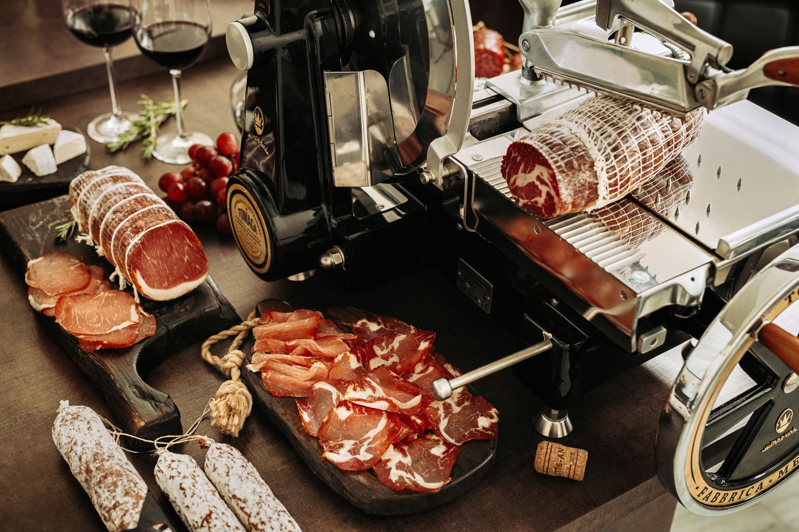

Despre Noi
Aflați mai mult despre Patronatul Întreprinderilor Industriei Prelucrătoare de Carne și misiunea noastră să susținem industria din Moldova.
Activitatea noastră
Reprezentăm interesele întreprinderilor producătoare și procesatoare de carne din Republica Moldova în relația cu autoritățile publice și alte instituții relevante. Ne implicăm activ în elaborarea și îmbunătățirea cadrului legislativ din domeniu, susținem un mediu de afaceri echitabil și competitiv și promovăm respectarea standardelor de calitate și siguranță alimentară.
Prioritatea noastră - Consumatorul
Patronatul are ca intenție dezvoltarea mai multor activități de advocacy ce vor avea un impact direct asupra consumatorului final, creșterea financiară pentru companii și extinderea relațiilor comerciale cu alte țări. Excluderea barierelor tarifare și netarifare va genera o creștere economică pentru întreprinderile din domeniu alimentar și vor crește salariile angajaților.
Misiunea noastră
Facilităm dialogul dintre angajatori, stat și partenerii sociali, oferim suport informațional și consultativ membrilor noștri și contribuim la dezvoltarea și modernizarea sectorului cărnii la nivel național și internațional.

Companiile membre PÎIPC coordonează peste 4800 de angajați, de la producere până magazine.
Sectorul industrial de prelucrare a cărnii contribuie semnificativ la economie, având peste 45 companii active pe teritoriu R. Moldova (fără partea stângă a Nistrului), cu 9 companii mari care generează 91% total vânzări. Din cele 9 companii mari, 8 sunt membri ai PÎIPC.
Înregistrată la data 17 decembrie 2010, PÎIPC lucrează spre a avea un impact pozitiv direct asupra consumatorului final, a susține creșterea financiară a companiilor membre și a facilita extinderea relațiilor comerciale cu alte țări în industria pe care o reprezintă.
Dorești să te alături membrilor noștri?
Descoperă cum putem ajuta organizația ta să crească și să prospere prin rețeaua noastră de suport și advocacy.
Explorează Membrii Noștri